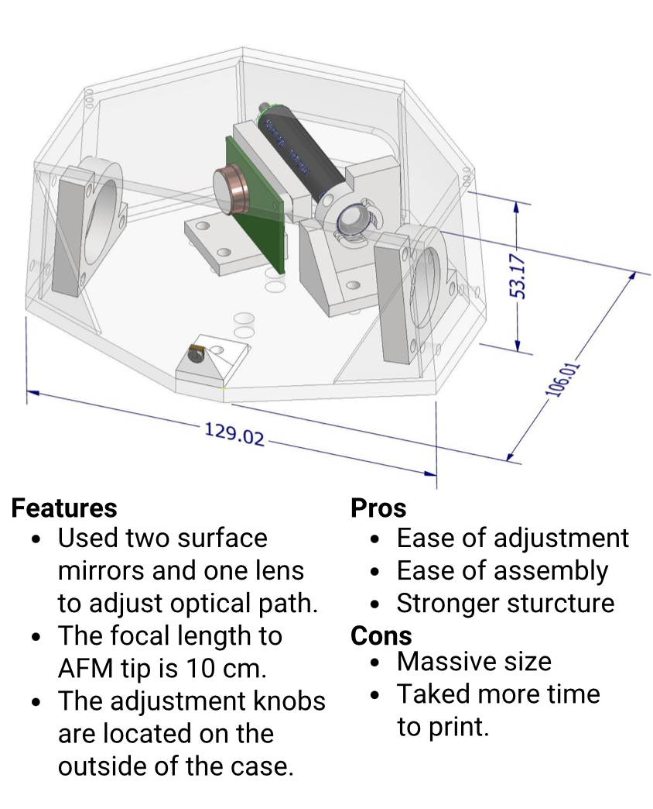
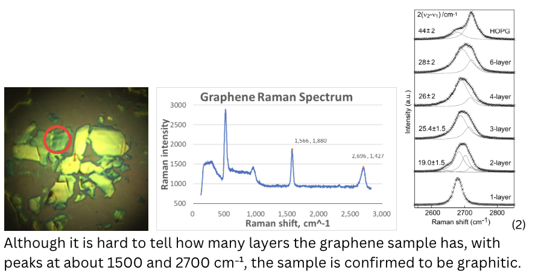

INTRODUCTION
- 3D printing enables fast iteration of custom components. We designed and assembled a compact AFM (Atomic Force Microscope) to evaluate the feasibility of low‑cost fabrication for precision instruments.
- Validation used a commercial calibration grating (TGQ1) and tape‑exfoliated graphene.
WHAT IS AFM?
- A sharp cantilever tip scans the surface while a laser and position sensor track deflection.
- Produces height maps and cross‑section profiles from micro‑ to nanoscale.
FIRST DESIGN

Second(Final) Design
TAPE METHOD OF GRAPHENE
RAMAN SPECTROSCOPY

SCANNING SAMPLES
SUMMARY & RECOGNITION
- Imaged the TGQ1 calibration grating and tape‑exfoliated graphene using a 3D‑printed AFM.
- TGQ1 scans reproduce the expected pattern; graphene scans show identifiable layered regions.
- These results indicate that 3D‑printed structural parts can support nanoscale AFM measurements.
- Bronze Award, Poster Competition.
REFERENCES
- Atomic force microscopy — Wikipedia. Overview of AFM principles.
- Graf, D. et al., Nano Lett. 2007, 7, 242 — Graphene Raman signatures.
← Back to projects